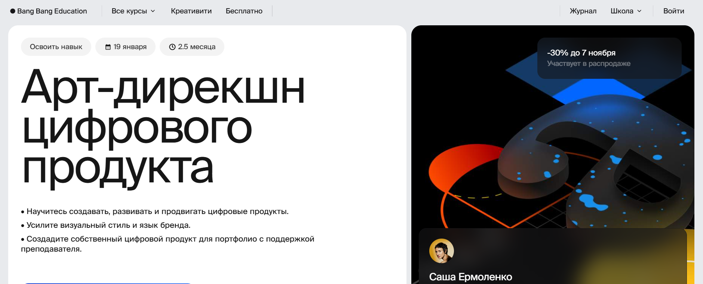
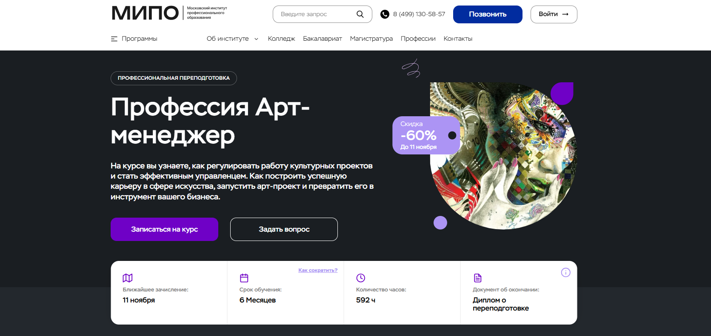
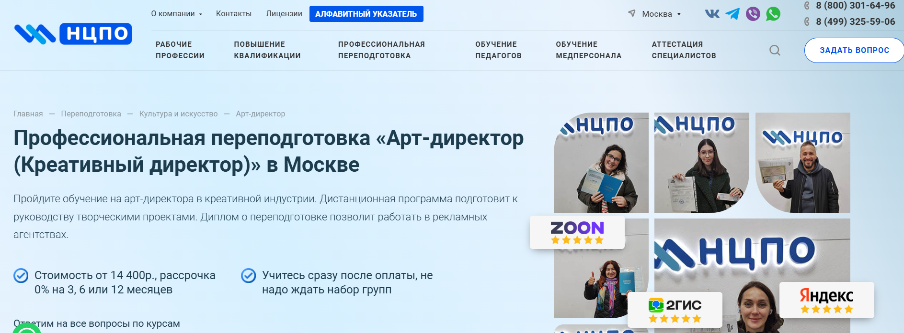
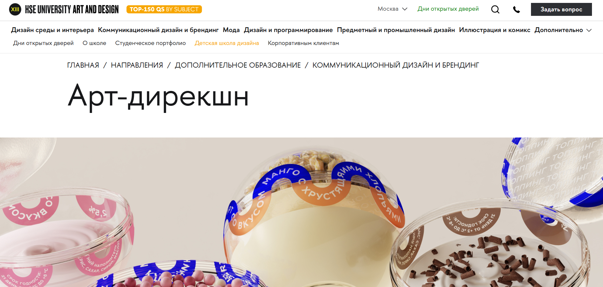
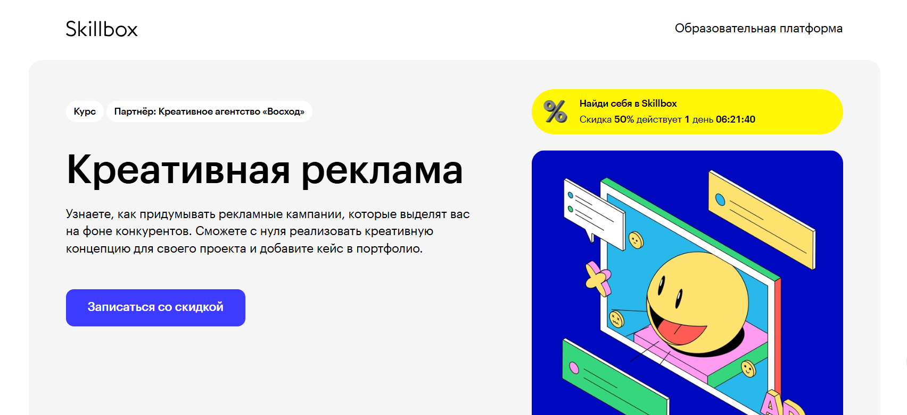
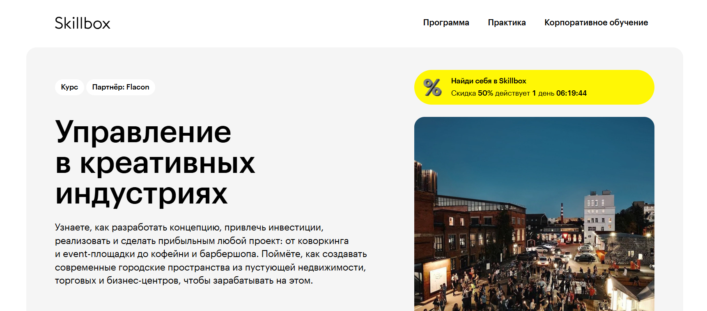

Профессия арт-директора объединяет управление креативными командами, разработку визуальных концепций и создание узнаваемого стиля бренда. Сегодня освоить профессию арт-директора можно в дистанционном формате — это удобный способ пройти обучение без отрыва от работы и получить актуальные профессиональные навыки. Мы составили рейтинг программ, где дистанционное обучение в сфере дизайна и творческих проектов помогает развить практические знания, необходимые для работы в креативных агентствах и креативных индустриях. Курсы предлагают форматы обучения на образовательных платформах, включают практические задания и проекты, после окончания курсов выпускники получают дипломы установленного образца. Такие программы обучения подойдут как начинающим дизайнерам, так и специалистам, проходящим профессиональную переподготовку, чтобы построить успешную карьеру арт-директора.
Информация обновлена:
ТОП онлайн-курсов обучения на Арт-директора
- 🏆 Арт-дирекшн цифрового продукта — Bang Bang Education
- 🏆 Профессия Арт-менеджер — МИПО (по промокоду onlinekursy действует скидка 🎁 10% )
- 🏆 Арт-дирекшн — Яндекс Практикум
- Арт-директор (Креативный директор) — Учебный центр «НЦПО»
- Арт-дирекшн — Школа дизайна НИУ ВШЭ
- Креативный маркетинг — Skillbox
- Управление в креативных индустриях — Skillbox
Отличительные преимущества каждой дистанционной программы обучения на креативного директора
| № | Название курса и школа | Отличительные преимущества | |
|---|---|---|---|
| 🥇 | Арт-дирекшн цифрового продукта — Bang Bang Education | Практическая направленность на цифровые продукты, интенсив 12 недель, поддержка кураторов, диплом о переподготовке, реальные проекты и карьерные консультации. | Перейти |
| 🥈 | Профессия Арт-менеджер — МИПО | Самый продолжительный курс (6 месяцев), официальный диплом с внесением в ФРДО, обучение при участии экспертов, акцент на арт-менеджмент и культурные проекты. | Перейти |
| 🥉 | Арт-дирекшн — Яндекс Практикум | Разработан арт-директорами Яндекса, 7 воркшопов и 3 консультации, упор на работу с нейросетями и системный подход, карьерная поддержка и гибкий формат. | Перейти |
| 4 | Арт-директор (Креативный директор) — НЦПО | Самая доступная стоимость, диплом с регистрацией в ФРДО, юридически прозрачное обучение по договору, гибкая рассрочка и круглосуточный доступ к материалам. | Перейти |
| 5 | Арт-дирекшн — НИУ ВШЭ | Академический формат, 2 года обучения, очно-дистанционный гибрид, 8 проектов в портфолио, преподаватели-практики и диплом государственного образца. | Перейти |
| 6 | Креативный маркетинг — Skillbox | Авторский курс от агентства «Восход», участие в международных конкурсах, акцент на креативное мышление и рекламу, доступ к материалам навсегда. | Перейти |
| 7 | Управление в креативных индустриях — Skillbox | Партнёрство с дизайн-заводом «Флакон», стажировка и практика на реальных объектах, обучение от предпринимателей и архитекторов, упор на управление проектами. | Перейти |
1. 🏆 Арт-дирекшн цифрового продукта – Онлайн-школа Bang Bang Education
- ✅ Официальный сайт: bangbangeducation.ru
- 💸 Цена: от 70 000 ₽ со скидкой 30% (полная стоимость — 100 000 ₽).
- 💳 Рассрочка: от 7 000 ₽/мес на 10 месяцев без переплаты.
- 📚 Формат: дистанционное образование — видеолекции, вебинары, домашние задания, индивидуальные консультации и практика на реальных проектах.
- ⏳ Продолжительность: 2,5 месяца (12 недель).
- 📜 Документ: выдаются диплом о профессиональной переподготовке и официальный документ о повышении квалификации.
- 📝 Трудоустройство: помощь в формировании портфолио, консультации по развитию карьеры арт-директора.
- 🔷 Для кого подходит курс: для дизайнеров, менеджеров проектов, специалистов креативных агентств и всех, кто хочет освоить профессию арт-директора в сфере дизайна и креативных индустриях.
Особенности:
Программа обучения включает комплексные модули, ориентированные на развитие профессиональных навыков управления креативными командами и созданию визуальных концепций цифровых продуктов. Дистанционный формат обучения позволяет проходить курс в любое удобное время и темпе. Программа охватывает ключевые этапы работы арт-директора — от исследования до защиты проекта. Обучение проходит на образовательных платформах с поддержкой преподавателей и кураторов. Курсы включают практические задания, вебинары и обсуждения, которые помогают закрепить полученные знания. После окончания курсов выпускники получают документ установленного образца. В процессе обучения студенты осваивают подходы к управлению проектами и развивают навыки работы с креативными командами. Форматы обучения позволяют сочетать дистанционное образование с основной занятостью и применять знания на практике уже во время прохождения курсов.
Чему учатся студенты:
- Осваивать профессию арт-директора цифрового продукта
- Создавать визуальные концепции и управлять креативными командами
- Разрабатывать брендовый стиль и визуальный язык продукта
- Понимать этапы создания креативных стратегий и интерфейсов
- Оценивать эффективность дизайна и управлять проектами
- Работать в креативных агентствах и брендах с цифровыми продуктами
- Использовать практические знания для продвижения продукта на рынке
Преподаватели:
- Саша Ермоленко — дизайн-директор с 14-летним опытом в IT и рекламе. Работала в VK, Rambler Group, «Яндексе», BBDO Group. Преподаёт в Британской высшей школе дизайна и Школе дизайна НИУ ВШЭ, участвовала в трёх крупных ребрендингах и создала две дизайн-системы.
Преимущества:
- Возможность дистанционного прохождения обучения в удобном формате
- Курс охватывает аспекты профессии арт-директора и этапы работы над цифровыми проектами
- Программа включает практические задания и поддержку преподавателя
- Выпускники получают диплом о профессиональной переподготовке
- Обучение проходит на современных образовательных платформах
- Доступ к учебным материалам и комьюнити после окончания обучения
- Помощь в трудоустройстве и развитии карьеры арт-директора
- Практика управления креативными командами и создание визуальных решений
Отзывы учеников:
Студенты отмечают удобный формат дистанционного обучения, доступность преподавателей и насыщенную практику. Многие выделяют, что обучение включает реальные проекты и помогает получить практические навыки. Отзывы подчеркивают высокий уровень образовательных программ, современный подход и возможность развить креативное мышление. После прохождения обучения выпускники успешно работают в креативных агентствах и цифровых студиях.
Перейти на официальный сайт курса2. 🏆 Профессия Арт-менеджер — Московский Институт Профессионального Образования (МИПО)
- ✅ Официальный сайт: mipo.msk.ru
- 💸 Цена: 44 700 ₽ (со скидкой 60%).
- 💳 Рассрочка: беспроцентная на 24 месяца, от 1 863 ₽ в месяц.
- 📚 Формат: дистанционное образование, онлайн-вебинары, тестирование, практические задания, видеоуроки и кураторская поддержка.
- ⏳ Продолжительность: 6 месяцев (592 часа).
- 📜 Документ: диплом о профессиональной переподготовке с внесением данных в Федеральный реестр ФИС-ФРДО.
- 📝 Трудоустройство: выпускники успешно работают в культурных проектах, музеях, галереях и креативных агентствах, 72% студентов переходят в более престижные компании.
- 🔷 Для кого подходит курс: для художников, менеджеров, выпускников факультетов искусствоведения и всех, кто хочет работать в сфере искусства и креативных индустриях.
Особенности:
Программа ориентирована на тех, кто стремится освоить профессию арт-директора и управлять креативными проектами в сфере искусства. Обучение проходит в дистанционном формате, что позволяет учиться в любое удобное время без отрыва от работы. Программа включает практические кейсы, задания и разборы реальных ситуаций из мира искусства. Студенты получают доступ к образовательным платформам с современными учебными материалами и онлайн-поддержкой кураторов. По завершении курса выпускники получают официальный диплом и могут работать на международном уровне. Образовательные этапы включают освоение управленческих навыков, стратегий продвижения и создания визуальных концепций для культурных проектов.
Чему учатся студенты:
- Составлять коммерческие предложения и презентации арт-проектов
- Выбирать площадки и аудитории для проведения мероприятий
- Создавать и мотивировать креативные команды
- Разрабатывать план продвижения проектов в различных каналах
- Оформлять пространства совместно с дизайнерами
- Управлять проектами и их концепцией от идеи до реализации
Преподаватели:
- Смагина Виктория Игоревна — кандидат экономических наук, эксперт в сфере управления культурными проектами
- Ветрова Екатерина Александровна — кандидат экономических наук, преподаватель в области арт-менеджмента
- Морозов Сергей Александрович — практик, директор компании, специалист по управлению проектами
- Моторин Дмитрий Викторович — эксперт по маркетингу и системам продаж
- Кузнецова Татьяна Викторовна — бизнес-тренер по управлению проектами в B2B и B2G
- Михновец Дарья Александровна — психолог, бизнес-тренер, специалист по командному взаимодействию
Преимущества:
- Обучение проходит полностью онлайн в удобном темпе
- Курс разработан при участии российских и зарубежных экспертов
- Выдаётся официальный диплом государственного образца
- Программы обучения включают практические кейсы и реальные задания
- Поддержка кураторов и преподавателей на всех этапах обучения
- Возможность совмещать обучение с работой
- Диплом котируется в России и за рубежом
- Помощь в построении карьеры арт-директора и арт-менеджера
Отзывы учеников:
Студенты отмечают удобный дистанционный формат обучения, качественные материалы и внимательных кураторов. Выпускники подчеркивают, что курсы предлагают реальные знания и практический опыт, а полученные профессиональные навыки помогают уверенно развиваться в креативных индустриях. Многие выделяют возможность проходить обучение без отрыва от работы и ценят поддержку преподавателей на протяжении всего курса.
Перейти на официальный сайт курса3. 🏆 Арт-дирекшн – Яндекс Практикум

- ✅ Официальный сайт: practicum.yandex.ru
- 💸 Цена обучения: от 122 400 ₽, действует скидка 20%, начать можно бесплатно.
- 💳 Рассрочка: доступна от 4 996 ₽, можно оплатить через работодателя.
- 📚 Формат: дистанционный формат, онлайн обучение с видеолекциями, воркшопами, тестами, консультациями и практическими заданиями.
- ⏳ Продолжительность: 4 месяца, обучение проходит в удобном режиме и совмещается с работой.
- 📜 Документ: удостоверение о повышении квалификации установленного образца.
- 📝 Трудоустройство: выпускники получают карьерный план и поддержку в развитии профессиональных навыков.
- 🔷 Для кого подходит курс: для дизайнеров, арт-директоров и специалистов, желающих вырасти до руководителя креативной команды.
Особенности:
Программа проходит в дистанционном формате и создана арт-директорами Яндекса. Обучение включает практические задания, 7 воркшопов и три индивидуальные консультации с ментором. Программы включают современные инструменты, методы работы с нейросетями и управление креативными командами. После окончания курсов студенты осваивают профессию арт-директора, развивают управленческие навыки и получают документ установленного образца. Форматы обучения удобны для специалистов, совмещающих учёбу с работой. В процессе обучения слушатели получают практические знания, которые помогают работать в креативных индустриях и сфере дизайна. Курс помогает систематизировать опыт и развить навыки руководителя в творческом проекте.
Чему учатся студенты:
- Понимать цели и задачи бренда
- Создавать визуальные концепции и управлять ими
- Работать с системой дизайна и коммуникаций
- Оптимизировать рабочие процессы с помощью нейросетей
- Брифовать заказчиков и взаимодействовать со стейкхолдерами
- Презентовать и аргументировать идеи на основе данных
- Управлять проектами и командой дизайнеров
Преподаватели:
- Василий Коваленко — арт-директор Яндекс Недвижимости
- Иван Анненков — арт-директор по коммуникациям Яндекс Лавки
- Александр Певчев — арт-директор Яндекс Фантеха
- Алёна Алексеева — арт-директор коммуникаций Лемана ПРО
- Эвелина Юрасова — арт-директор, работала с Apple, Dyson, Samsung
- Родион Соснов — дизайн-менеджер, ex Head of Design в ABBYY
- Виолета Маркосян — креативный директор агентства MARKS
- Анна Назарова — проектный арт-директор, эксперт Яндекс Практикума
- Анастасия Хижик — арт-директор в IPG, сотрудничала с Leo Burnett и BBDO
Преимущества:
- Дистанционное образование доступно онлайн с любого устройства
- Курс проходит на образовательной платформе с поддержкой кураторов
- Программы обучения включают реальные проекты и воркшопы
- Освойте профессию арт-директора и получите документ о квалификации
- Выпускники получают помощь в построении карьеры и развитии навыков управления
- Курс помогает развивать креативное мышление и практические навыки
- Удобный формат обучения и возможность гибкого графика
- После окончания обучения студенты получают доступ к материалам и сообществу специалистов
Отзывы учеников:
Выпускники отмечают удобный формат дистанционного обучения, профессионализм преподавателей и практические знания, полученные в процессе обучения. Отмечают, что программа помогает развить управленческие навыки, освоить креативные подходы и уверенно работать в сфере дизайна. После прохождения курса многие выпускники вышли на новый профессиональный уровень и получили предложения из крупных компаний и креативных агентств.
Перейти на официальный сайт курса4. Арт-директор (Креативный директор) — Учебный центр «НЦПО»
- ✅ Официальный сайт: ncpo.ru
- 💸 Цена: от 14 400 ₽ (скидка 2 500 ₽ при оплате в день заявки).
- 💳 Рассрочка: 0% на 3, 6 или 12 месяцев, от 1 200 ₽ в месяц.
- 📚 Формат: дистанционный формат обучения — видеолекции, тесты, практические задания и доступ к образовательной платформе 24/7.
- ⏳ Продолжительность: от 250 до 500 академических часов.
- 📜 Документ: диплом о профессиональной переподготовке с внесением в государственный реестр ФРДО.
- 📝 Трудоустройство: выпускники получают официальный диплом, подтверждающий квалификацию для работы в креативных агентствах и сфере дизайна.
- 🔷 Для кого подходит курс: для специалистов с высшим или средним специальным образованием, желающих сменить профессию или повысить уровень квалификации в креативных индустриях.
Особенности:
Обучение проходит в дистанционном формате, что удобно для тех, кто совмещает учебу с работой. Программа разработана для творческих специалистов, стремящихся управлять креативными командами и проектами в сфере искусства и рекламы. Курсы переподготовки включают теоретические знания и практические задания, направленные на развитие профессиональных навыков управления проектами и визуальной коммуникацией. Образовательная платформа предоставляет постоянный доступ к материалам, а процесс обучения включает этапы тестирования и самостоятельной работы. После окончания курсов выпускники получают диплом государственного образца. Такой документ подтверждает квалификацию арт-директора и открывает возможности для карьерного роста в креативных агентствах и культурных организациях.
Чему учатся студенты:
- Разрабатывать креативные концепции и визуальные решения для брендов и проектов
- Управлять процессами создания дизайна и работы команды дизайнеров
- Формировать профессиональное портфолио и презентовать свои проекты
- Применять теоретические и практические знания для работы в креативных индустриях
- Осваивать современные подходы к графическому дизайну и визуальному маркетингу
Преподаватели:
- Терешков Александр Леонидович — генеральный директор учебного центра «НЦПО»
- Грезнева Диана — куратор программы, специалист по креативным коммуникациям
- Малкова Анна — преподаватель практических дисциплин, эксперт в области дизайна и визуальных искусств
Преимущества:
- Дистанционное обучение в удобном формате без необходимости посещать офис
- Доступ к учебным материалам и тестам круглосуточно
- Выдается официальный диплом, внесённый в государственный реестр ФРДО
- Возможность рассрочки без переплат
- Поддержка кураторов и менеджеров на всех этапах прохождения обучения
- Подходит для специалистов, желающих перейти в сферу дизайна и рекламы
- Прозрачные юридические гарантии — обучение по официальному договору
Отзывы учеников:
Студенты отмечают удобный формат дистанционного обучения, доступность платформы и квалифицированных преподавателей. Часто подчеркивают возможность совмещать курсы с основной работой и практическую пользу занятий. Высоко оценивают оперативную поддержку и оформление документов, а также качество материалов и реальную помощь в освоении новой профессии.
Перейти на официальный сайт курса5. Арт-дирекшн — Школа дизайна НИУ ВШЭ
- ✅ Официальный сайт: design.hse.ru
- 💸 Цена обучения: 400 000 ₽ в год.
- 💳 Рассрочка: помесячно — 40 000 ₽; помодульно — 100 000 ₽.
- 📚 Формат: очное и дистанционное обучение, лекции, практические задания, вебинары и работа над проектами.
- ⏳ Продолжительность: 2 года, 8 модулей, занятия 4 раза в неделю.
- 📜 Документ: диплом о профессиональной переподготовке государственного образца.
- 📝 Трудоустройство: выпускники получают возможность работать арт-директорами и дизайнерами в креативных агентствах и брендинговых студиях.
- 🔷 Для кого подходит курс: для практикующих дизайнеров и специалистов, стремящихся освоить профессию арт-директора и развить управленческие и профессиональные навыки.
Особенности:
Программа ориентирована на развитие креативных компетенций и обучение в формате реальной работы дизайн-бюро. Курс помогает освоить профессию арт-директора и научиться управлять креативными командами. Обучение проходит в удобном формате с сочетанием практических заданий и теоретических блоков. Студенты создают восемь проектов, формируют профессиональное портфолио и получают навыки, востребованные в креативных индустриях и рекламных агентствах. Программа обучения включает работу над айдентикой, брендингом, упаковкой и визуальными коммуникациями. После окончания курсов выпускники получают диплом о профессиональной переподготовке и могут продолжить карьеру на руководящих позициях в сфере дизайна.
Чему учатся студенты:
- Разрабатывать айдентику и визуальные концепции бренда;
- Создавать дизайн упаковки и графические элементы;
- Проводить визуальные исследования и структурировать контент;
- Работать в программах Adobe и осваивать моушн-дизайн;
- Управлять творческими командами и реализовывать комплексные проекты;
- Применять знания в сфере искусства, типографики и визуального брендинга;
- Понимать креативные стратегии и процессы арт-дирекции.
Преподаватели:
- Анна Карп — графический и веб-дизайнер, арт-директор проектов фестиваля «МОРС», сотрудничала с UNIQLO, The Village, ГЦСИ, Strelka Institute.
- Кураторы курса — опытные специалисты из индустрии дизайна и коммуникаций, работающие с крупными брендами и культурными проектами.
Преимущества:
- Обучение проходит в формате проектной практики с элементами стажировки;
- Возможность освоить профессию арт-директора с нуля или повысить квалификацию;
- Программы включают реальные кейсы и современные технологии дизайна;
- Диплом о профессиональной переподготовке выдается после прохождения курса;
- Образовательный процесс сочетает теоретические знания и практические навыки;
- Доступ к образовательной платформе и материалам курса онлайн;
- Участие в днях открытых дверей, вебинарах и встречах с кураторами;
- Поддержка студентов на всех этапах обучения и помощи в трудоустройстве.
Отзывы учеников:
Слушатели отмечают высокий уровень преподавателей и удобный формат обучения. Многие подчеркивают практическую направленность программы, насыщенные модули и возможность развить креативное мышление. Отмечается вовлеченность кураторов, индивидуальный подход и реальные карьерные результаты после окончания обучения в Школе дизайна НИУ ВШЭ.
Перейти на официальный сайт курса6. Креативный маркетинг — Skillbox
- ✅ Официальный сайт: skillbox.ru
- 💸 Цена обучения: 37 074 ₽ (скидка 50%).
- 💳 Рассрочка: от 6 179 ₽/мес на 6 месяцев, первый платёж через 30 дней.
- 📚 Формат: дистанционный формат — видеолекции, практические задания, тесты и проекты. Обучение проходит онлайн в любое удобное время.
- ⏳ Продолжительность: 2 месяца.
- 📜 Документ: выдаются диплом и сертификат установленного образца о профессиональной переподготовке.
- 📝 Трудоустройство: помощь с трудоустройством, участие в конкурсах Red Dot Award, ADCR Awards, Young Glory.
- 🔷 Для кого подходит курс: маркетологам, копирайтерам, SMM-специалистам, бренд- и PR-менеджерам, желающим развить креативное мышление и управлять проектами в сфере маркетинга и дизайна.
Особенности:
Программа обучения включает работу с реальными кейсами и практическими заданиями от агентства «Восход». Курс разработан в дистанционном формате, что позволяет учиться в любое удобное время. Обучение проходит на образовательной платформе Skillbox с доступом к учебным материалам навсегда. Программы включают теоретические знания и практику, направленную на развитие профессиональных навыков и понимание креативных индустрий. Студенты получают возможность освоить профессию арт-директора и научиться управлять креативными командами. Все этапы включают обратную связь от кураторов и экспертов. После окончания курсов выпускники получают документ, подтверждающий квалификацию, и добавляют реальные проекты в портфолио. Skillbox предлагает удобный формат онлайн обучения с поддержкой преподавателей и гибкими формами прохождения курсов.
Чему учатся студенты:
- Формировать креативные стратегии для брендов и рекламных агентств
- Анализировать целевую аудиторию и разрабатывать креативные концепции
- Создавать визуальные и текстовые решения для маркетинговых кампаний
- Оценивать эффективность идей и управлять творческими процессами
- Брифовать заказчиков и презентовать готовые проекты
- Адаптировать креативные идеи под разные рекламные каналы
- Работать над творческим проектом в команде специалистов
Преподаватели:
- Андрей Губайдуллин — основатель и креативный директор агентства «Восход», 10 Каннских Львов, более 20 лет опыта в рекламе.
- Антон Рожин — креативный директор агентства «Восход».
- Ксения Нургалиева — креативный директор, специалист по киберспортивному маркетингу в FMCG.
- Дмитрий Доник — директор по стратегии и медиа агентства «Восход».
- Павел Путинцев — ведущий бренд-стратег агентства «Восход».
- Василий Киселёв — арт-директор digital-отдела агентства «Восход».
Преимущества:
- Дистанционное обучение с возможностью проходить занятия онлайн в любое удобное время
- Программы включают практические задания и реальные проекты
- Доступ к материалам курса навсегда после окончания обучения
- Опытные преподаватели из ведущего креативного агентства России
- Профессиональная переподготовка и подтверждение навыков документом установленного образца
- Форматы обучения включают видеоуроки, практику и тестирование
- Помощь в построении карьеры арт-директора и развитии профессиональных навыков
- Возможность участия в международных конкурсах и добавления кейсов в портфолио
Отзывы учеников:
Студенты Skillbox отмечают высокий уровень преподавания, удобный формат дистанционного обучения и практическую направленность курсов. Отзывы подчеркивают, что после прохождения обучения выпускники получают востребованные навыки и находят работу в креативных агентствах и рекламных компаниях. Многие хвалят поддержку кураторов, возможность проходить обучение онлайн и доступ к учебным материалам после окончания курса.
Перейти на официальный сайт курса7. Управление в креативных индустриях — Skillbox
- ✅ Официальный сайт: skillbox.ru
- 💸 Цена обучения: 64 908 ₽ (скидка 50%).
- 💳 Рассрочка: от 5 409 ₽/мес на 12 месяцев, без переплат.
- 📚 Формат: дистанционное обучение, видеолекции, практические задания, тесты, вебинары и стажировки во «Флаконе».
- ⏳ Продолжительность: 4 месяца.
- 📜 Документ: диплом о профессиональной переподготовке установленного образца.
- 📝 Трудоустройство: стажировка и возможность трудоустройства на объектах группы компаний «Флакон».
- 🔷 Для кого подходит курс: предпринимателям, владельцам недвижимости, кураторам культурных проектов и тем, кто хочет освоить профессию арт-директора в креативных индустриях.
Особенности:
Обучение проходит в дистанционном формате, что позволяет проходить курс из любой точки мира. Программа создана при участии экспертов группы компаний «Флакон», которые делятся практическим опытом управления креативными командами и создания прибыльных городских пространств. Студенты изучают этапы развития проектов, осваивают профессиональные навыки и учатся управлять проектами в сфере дизайна, рекламы и искусства. В программу обучения включены видеоматериалы, практические кейсы и живые вебинары. Дистанционное образование в Skillbox позволяет совмещать учебу с работой, а выпускники получают диплом о дополнительном профессиональном образовании. После окончания обучения студенты приобретают управленческие навыки, необходимые для успешной карьеры в креативных агентствах и культурных центрах.
Чему учатся студенты:
- Создавать концепции креативных пространств и разрабатывать стратегии продвижения проектов.
- Определять потребности целевой аудитории и привлекать инвесторов.
- Планировать бюджет, управлять командой специалистов и проектными процессами.
- Организовывать культурные мероприятия и развивать творческую среду.
- Разрабатывать маркетинговые стратегии и управлять креативными командами.
- Анализировать рынок недвижимости и создавать прибыльные городские проекты.
Преподаватели:
- Николай Матушевский — предприниматель, основатель дизайн-завода «Флакон» и творческого комьюнити «Деревня».
- Михаил Егошин — директор по регионам дизайн-завода «Флакон».
- Елена Журавлева — бренд-менеджер дизайн-завода «Флакон».
- Мария Степаненко — куратор региональных проектов «Флакона».
- Данил Попков — предприниматель, куратор открытых объектов дизайн-завода «Флакон».
- Мария Новикова — архитектор общественных пространств и проектов дизайн-завода «Флакон».
Преимущества:
- Дистанционный формат обучения — доступно онлайн и в любое удобное время.
- Программы обучения включают практические задания и реальные кейсы.
- Обучение проходит с поддержкой кураторов и экспертов индустрии.
- После окончания курсов выдаются дипломы о профессиональной переподготовке.
- Возможность пройти стажировку и получить практический опыт во «Флаконе».
- Поддержка студентов и доступ к чату выпускников после завершения курса.
- Форматы обучения включают вебинары, тесты и практические проекты.
- Помощь в трудоустройстве и построении успешной карьеры арт-директора.
Отзывы учеников:
Выпускники отмечают высокий профессиональный уровень преподавателей, удобный формат обучения и возможность получить реальные практические навыки. Студенты подчеркивают, что курс помогает развить креативное мышление, научиться управлять проектами и реализовать собственные идеи. Отмечают гибкий график, живое общение с экспертами и доступ к профессиональной среде. Многие выпускники успешно начали карьеру в креативных агентствах и управлении культурными проектами.
Перейти на официальный сайт курсаКто такой арт-директор?
Арт-директор — это ключевая фигура в мире дизайна, рекламы, кино, моды и цифрового маркетинга. Он отвечает за визуальную концепцию проекта и координирует работу всей творческой команды: дизайнеров, фотографов, иллюстраторов, видеографов и копирайтеров. Главная задача арт-директора — сделать визуальную составляющую бренда или продукта целостной, узнаваемой и эмоционально привлекательной для целевой аудитории.
Что делают креативные директоры и чем занимаются?
Работа арт-директора многогранна и зависит от сферы деятельности компании. В рекламном агентстве он определяет визуальный стиль кампании, в digital-сфере — разрабатывает креативные концепции для сайтов и приложений, а в кино или моде — формирует визуальную эстетику проекта.
- Разработка и утверждение визуальных концепций и идей;
- Координация работы дизайнеров, иллюстраторов, фотографов, видеопродакшн-команд;
- Создание бренд-буков, фирменного стиля и айдентики;
- Контроль качества визуального контента;
- Участие в стратегических креативных сессиях и брейнштормах;
- Коммуникация с клиентами и защита креативных идей.
Что должен знать и уметь арт-директор?
Профессия требует не только художественного вкуса, но и стратегического мышления. Современный арт-директор — это креативный лидер, способный соединить эстетику, маркетинг и технологии.
- Знание графических программ (Adobe Photoshop, Illustrator, InDesign, Figma);
- Понимание принципов бренд-дизайна, композиции, цвета и типографики;
- Опыт в UI/UX-дизайне и визуальном сторителлинге;
- Навыки руководства и управления командой;
- Базовые знания маркетинга и digital-аналитики;
- Способность мыслить концептуально и видеть «общую картину» проекта.
Личные качества успешного арт-директора
Чтобы добиться успеха в профессии, важно развивать не только технические, но и мягкие навыки — так называемые soft skills.
- Креативность и чувство вкуса;
- Лидерство и умение вдохновлять команду;
- Коммуникабельность и способность аргументировать решения;
- Гибкость и стрессоустойчивость;
- Постоянное стремление к саморазвитию.
Востребованность и зарплаты креативного директоров в России
Профессия арт-директора остается одной из самых востребованных в креативной индустрии. Цифровизация, рост онлайн-брендов и развитие визуального контента создают высокий спрос на сильных специалистов, способных управлять визуальными коммуникациями.
По данным аналитических сервисов по трудоустройству:
- Начинающий арт-директор получает от 100 000 до 150 000 рублей в месяц;
- Специалисты с опытом от 3 лет зарабатывают от 200 000 до 300 000 рублей;
- В крупных агентствах и IT-компаниях уровень зарплаты может превышать 400 000 рублей;
- Фриланс-арт-директора нередко получают оплату за проект, что позволяет им зарабатывать еще больше при высокой загрузке.
Как стать арт-директором и где учиться?
Арт-директором не становятся сразу — этому предшествует путь дизайнера, иллюстратора или креативного специалиста. Важно накопить опыт, понимание процессов и научиться видеть проект комплексно.
- Получить образование в сфере дизайна, рекламы, визуальных коммуникаций или маркетинга;
- Освоить современные инструменты графического и веб-дизайна;
- Развивать портфолио и участвовать в конкурсах и креативных проектах;
- Учиться у опытных менторов и арт-директоров;
- Постоянно анализировать визуальные тренды и кейсы мировых брендов.
Карьерный рост и перспективы для креативного директора
Арт-директор может развиваться в нескольких направлениях: стать креативным директором агентства, основать собственную студию, перейти в бренд-менеджмент или продюсирование визуальных проектов. Опытный арт-директор способен влиять на имидж целых компаний и формировать тренды в индустрии.
Тенденции профессии в 2025-2026 году
Современный арт-директор всё чаще работает на стыке технологий и творчества. Искусственный интеллект, AR/VR, интерактивный дизайн и метавселенные становятся частью его профессионального поля.
- Рост значения кросс-дисциплинарных навыков;
- Использование AI-инструментов для генерации визуальных концепций;
- Акцент на устойчивом дизайне и этичном брендинге;
- Сотрудничество с международными командами в удаленном формате.
Что включает в себя обучение на арт-директора и как освоить профессию?
Обучение на арт-директора включает изучение основ дизайна, управления проектами и креативными командами. Программы обучения охватывают аспекты профессии арт-директора: разработку визуальных концепций, управление творческими процессами и создание брендинговых стратегий. Освойте профессию с нуля на дистанционных курсах — обучение проходит в удобном формате с доступом к теоретическим и практическим материалам.
Как проходит дистанционное обучение креативных директоров?
В дистанционном обучении арт-директоров слушатели получают доступ к интерактивным лекциям, видеоурокам и практическим заданиям. Обучение проходит онлайн на образовательных платформах, что позволяет выбирать любое удобное время и темп. Такой дистанционный формат подходит работающим специалистам и начинающим дизайнерам, стремящимся развить профессиональные навыки.
Какие форматы обучения на арт-директора доступны онлайн?
Современные школы дизайна предлагают различные форматы обучения: короткие интенсивы, программы профессиональной переподготовки и углубленные онлайн-курсы. Каждый формат адаптирован под разные уровни подготовки — от начинающих до опытных специалистов в сфере дизайна и рекламы. Программы включают практические проекты и консультации с преподавателями.
Чему учат на дистанционных курсах по профессии арт-директора?
Дистанционные курсы по профессии арт-директора учат создавать визуальные концепции, управлять креативными командами и развивать бренды. Студенты получают теоретические знания и практические навыки в графическом дизайне, маркетинге, управлении творческой командой и проектами. Программы включают практические кейсы из креативных агентств.
Сколько длится обучение и от чего зависят сроки прохождения курсов?
Сроки обучения зависят от выбранного формата. Базовые программы для начинающих занимают от 3 до 6 месяцев, а курсы профессиональной переподготовки — до 12 месяцев. Прохождение обучения включает практические задания и работу над творческим проектом, что помогает закрепить полученные знания.
Какой диплом выдаётся после окончания обучения на кретивного директора?
После окончания курсов выпускники получают диплом установленного образца или сертификат о профессиональной переподготовке. Документы выдаются образовательными платформами, имеющими государственную аккредитацию. По завершению курса выпускники получают подтверждение своих навыков и могут претендовать на должность креативного директора или арт-директора.
Можно ли получить профессию арт-директора без художественного образования?
Да, получить профессию арт-директора можно без профильного образования. Дистанционное образование позволяет начать с нуля — программы включают изучение основ дизайна, графических инструментов и принципов креативного руководства. Главное — желание развивать креативное мышление и управленческие навыки.
Какие практические навыки развиваются в процессе обучения?
Во время обучения студенты осваивают практические навыки: управление проектами, разработку визуальных концепций, креативное мышление и коммуникацию с клиентами. Практика строится на реальных кейсах, что помогает развить навыки управления творческой командой и эффективно реализовывать проекты в креативных индустриях.
Кому подойдут курсы обучения на креативного директора?
Курсы арт-директора подойдут дизайнерам, маркетологам, менеджерам проектов и всем, кто стремится развивать карьеру в креативных индустриях. Обучение включает модули по руководству креативными командами, созданию визуальных стратегий и управлению проектами в сфере искусства и рекламы.
Какие программы обучения предлагают современные образовательные платформы?
Современные образовательные платформы предлагают уникальные программы обучения, которые охватывают теорию и практику креативного руководства. Программы включают проектную работу, курирование от опытных специалистов и участие в реальных проектах. Это позволяет студентам получить практический опыт и создать сильное портфолио.
Как выбрать подходящий формат дистанционного обучения?
Выбор формата обучения зависит от целей и уровня подготовки. Для тех, кто только начинает, подойдут базовые дистанционные курсы. Опытным дизайнерам и менеджерам — программы профессиональной переподготовки. Все форматы доступны онлайн и предоставляют гибкий график занятий.
Какие карьерные перспективы после получения профессии арт-директора?
После окончания обучения выпускники могут строить карьеру арт-директора в креативных агентствах, компаниях, рекламных студиях или открыть собственное бюро дизайна. Профессия арт-директора востребована в креативных индустриях, сфере маркетинга и культурных проектах. Полученные навыки помогают управлять креативными командами на международном уровне.
Что включает программа профессиональной переподготовки креативных директоров?
Программы профессиональной переподготовки включают изучение теоретических знаний, практических кейсов и стратегий управления творческими командами. Курсы переподготовки позволяют специалистам из смежных профессий — дизайнеров, маркетологов, менеджеров — перейти в креативную индустрию и получить новую квалификацию.
Как проходит практика и защита итогового проекта?
В процессе обучения студенты выполняют практические задания и работают над творческим проектом. Этапы включают разработку визуальной концепции, создание брендинга и презентацию проекта перед кураторами. Итогом прохождения обучения становится защита дипломного проекта, подтверждающая профессиональные навыки слушателя.
Какие преимущества дистанционного формата обучения на арт-директора?
Дистанционный формат обучения позволяет проходить курс в любое удобное время, сочетая учёбу с работой. Обучение проводится онлайн, что обеспечивает доступ к качественным учебным материалам и поддержке преподавателей. Такой формат открывает возможность дистанционного получения профессии и развивает необходимые навыки управления креативными процессами.
Где работают выпускники программ по обучению арт-директоров?
Выпускники курсов успешно работают в рекламных и креативных агентствах, продакшн-студиях, компаниях в сфере маркетинга и искусства. Многие становятся руководителями творческих команд, менеджерами проектов или открывают собственные креативные агентства. Освоив профессию арт-директора, можно построить успешную карьеру в международных компаниях и креативных индустриях.
Какой результат получает студент после прохождения обучения?
После прохождения обучения студент получает диплом о профессиональной переподготовке, готовое портфолио и уверенные практические навыки. Выпускники получают возможность работать на должности арт-директора, управлять креативными командами и создавать визуальные концепции для брендов и культурных проектов.
Почему стоит выбрать дистанционные курсы на арт-директора?
Дистанционные курсы по обучению арт-директора — это удобный формат получения профессии, доступный онлайн. Обучение проходит в гибком режиме, включает практические задания и курирование от экспертов. Такой подход позволяет освоить профессию арт-директора и начать успешную карьеру в креативных индустриях без необходимости очного присутствия.
------------------------------------------------
Реклама. Информация о рекламодателе по ссылкам в статье.